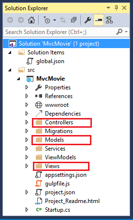

Adding a controller¶
The Model-View-Controller (MVC) architectural pattern separates an app into three main components: the Model, the View, and the Controller. The MVC pattern helps you create apps that are testable and easier to maintain and update than traditional monolithic apps. MVC-based apps contain:
- Models: Classes that represent the data of the app and that use validation logic to enforce business rules for that data. Typically, model objects retrieve and store model state in a database. In this tutorial, a
Moviemodel retrieves movie data from a database, provides it to the view or updates it. Updated data is written to a SQL Server database. - Views: Views are the components that display the app’s user interface (UI). Generally, this UI displays the model data.
- Controllers: Classes that handle browser requests, retrieve model data, and then specify view templates that return a response to the browser. In an MVC app, the view only displays information; the controller handles and responds to user input and interaction. For example, the controller handles route data and query-string values, and passes these values to the model. The model might use these values to query the database.
The MVC pattern helps you create apps that separate the different aspects of the app (input logic, business logic, and UI logic), while providing a loose coupling between these elements. The pattern specifies where each kind of logic should be located in the app. The UI logic belongs in the view. Input logic belongs in the controller. Business logic belongs in the model. This separation helps you manage complexity when you build an app, because it enables you to work on one aspect of the implementation at a time without impacting the code of another. For example, you can work on the view code without depending on the business logic code.
We’ll be covering all these concepts in this tutorial series and show you how to use them to build a simple movie app. The following image shows the Models, Views and Controllers folders in the MVC project.
- In Solution Explorer, right-click Controllers > Add > Controller...
- In the Add Scaffold dialog
- Tap MVC Controller - Empty
- Tap Add
- Name the controller HelloWorldController
- Tap Add
Replace the contents of Controllers/HelloWorldController.cs with the following:
using Microsoft.AspNetCore.Mvc;
using System.Text.Encodings.Web;
namespace MvcMovie.Controllers
{
public class HelloWorldController : Controller
{
//
// GET: /HelloWorld/
public string Index()
{
return "This is my default action...";
}
//
// GET: /HelloWorld/Welcome/
public string Welcome()
{
return "This is the Welcome action method...";
}
}
}
Every public method in a controller is callable as an HTTP endpoint. In the sample above, both methods return a string. Note the comments preceding each method:
public class HelloWorldController : Controller
{
//
// GET: /HelloWorld/
public string Index()
{
return "This is my default action...";
}
//
// GET: /HelloWorld/Welcome/
public string Welcome()
{
return "This is the Welcome action method...";
}
}
The first comment states this is an HTTP GET method that is invoked by appending “/HelloWorld/” to the URL. The second comment specifies an HTTP GET method that is invoked by appending “/HelloWorld/Welcome/” to the URL. Later on in the tutorial we’ll use the scaffolding engine to generate HTTP POST methods.
Run the app in non-debug mode (press Ctrl+F5) and append “HelloWorld” to the path in the address bar. (In the image below, http://localhost:1234/HelloWorld is used, but you’ll have to replace 1234 with the port number of your app.) The Index method returns a string. You told the system to return some HTML, and it did!
MVC invokes controller classes (and the action methods within them) depending on the incoming URL. The default URL routing logic used by MVC uses a format like this to determine what code to invoke:
/[Controller]/[ActionName]/[Parameters]
You set the format for routing in the Startup.cs file.
app.UseMvc(routes =>
{
routes.MapRoute(
name: "default",
template: "{controller=Home}/{action=Index}/{id?}");
});
When you run the app and don’t supply any URL segments, it defaults to the “Home” controller and the “Index” method specified in the template line highlighted above.
The first URL segment determines the controller class to run. So localhost:xxxx/HelloWorld maps to the HelloWorldController class. The second part of the URL segment determines the action method on the class. So localhost:xxxx/HelloWorld/Index would cause the Index method of the HelloWorldController class to run. Notice that we only had to browse to localhost:xxxx/HelloWorld and the Index method was called by default. This is because Index is the default method that will be called on a controller if a method name is not explicitly specified. The third part of the URL segment ( Parameters) is for route data. We’ll see route data later on in this tutorial.
Browse to http://localhost:xxxx/HelloWorld/Welcome. The Welcome method runs and returns the string “This is the Welcome action method...”. The default MVC routing is /[Controller]/[ActionName]/[Parameters]. For this URL, the controller is HelloWorld and Welcome is the action method. We haven’t used the [Parameters] part of the URL yet.
Let’s modify the example slightly so that you can pass some parameter information from the URL to the controller (for example, /HelloWorld/Welcome?name=Scott&numtimes=4). Change the Welcome method to include two parameters as shown below. Note that the code uses the C# optional-parameter feature to indicate that the numTimes parameter defaults to 1 if no value is passed for that parameter.
public string Welcome(string name, int numTimes = 1)
{
return HtmlEncoder.Default.Encode(
"Hello " + name + ", NumTimes is: " + numTimes);
}
Note
The code above uses HtmlEncoder.Default.Encode to protect the app from malicious input (namely JavaScript).
Note
In Visual Studio 2015, when you are running without debugging (Ctl+F5), you don’t need to build the app after changing the code. Just save the file, refresh your browser and you can see the changes.
Run your app and browse to:
http://localhost:xxxx/HelloWorld/Welcome?name=Rick&numtimes=4
(Replace xxxx with your port number.) You can try different values for name and numtimes in the URL. The MVC model binding system automatically maps the named parameters from the query string in the address bar to parameters in your method. See Model Binding for more information.
In the sample above, the URL segment (Parameters) is not used, the name and numTimes parameters are passed as query strings. The ? (question mark) in the above URL is a separator, and the query strings follow. The & character separates query strings.
Replace the Welcome method with the following code:
public string Welcome(string name, int ID = 1)
{
return HtmlEncoder.Default.Encode(
"Hello " + name + ", ID: " + ID);
}
Run the app and enter the following URL: http://localhost:xxx/HelloWorld/Welcome/3?name=Rick
This time the third URL segment matched the route parameter id. The Welcome method contains a parameter id that matched the URL template in the MapRoute method. The trailing ? (in id?) indicates the id parameter is optional.
app.UseMvc(routes =>
{
routes.MapRoute(
name: "default",
template: "{controller=Home}/{action=Index}/{id?}");
});
In these examples the controller has been doing the “VC” portion of MVC - that is, the view and controller work. The controller is returning HTML directly. Generally you don’t want controllers returning HTML directly, since that becomes very cumbersome to code and maintain. Instead we’ll typically use a separate Razor view template file to help generate the HTML response. We’ll do that in the next tutorial.